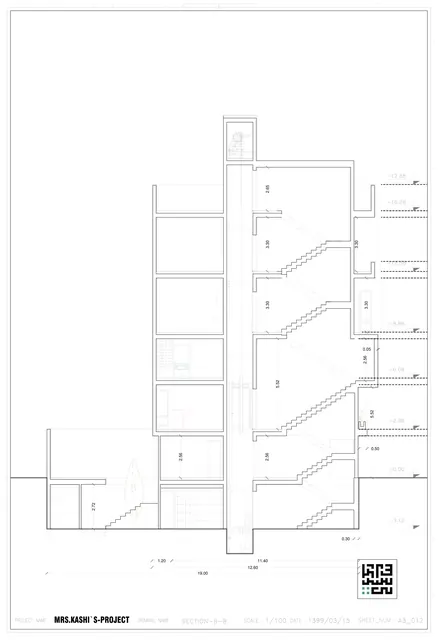
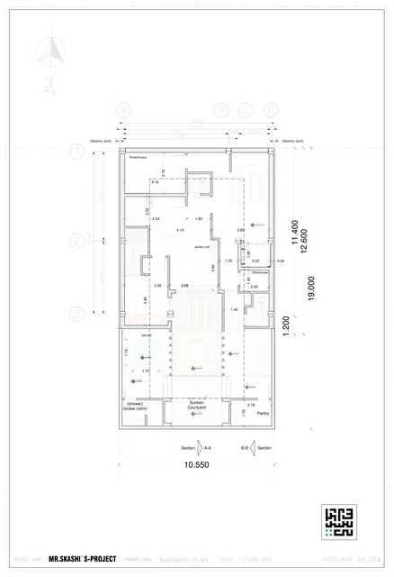
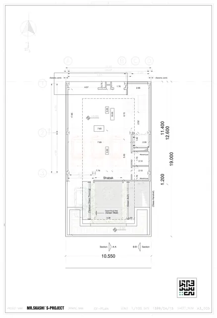
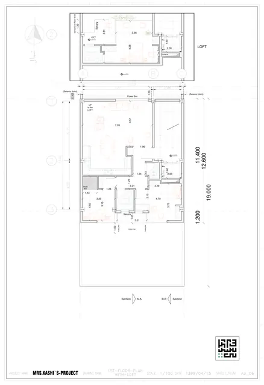
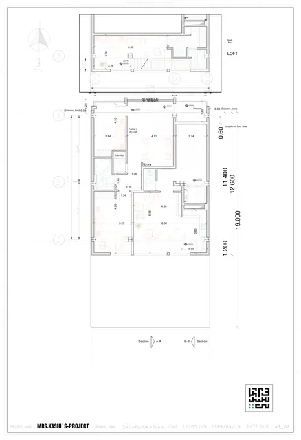
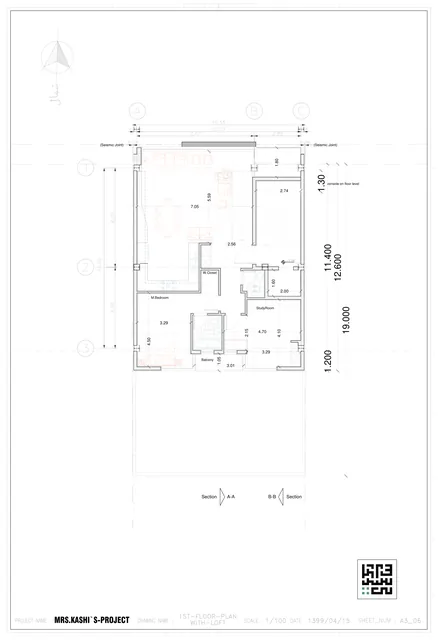

نقشهها
دوازده شیت، یکییکی — با یادداشت اینکه روی هر کدام به چه چیزی باید نگاه کرد.
طرح ۱۳۹۹

برش B-Bهمهٔ ترازها، از −۳٫۱۲ تا +۱۷٫۸۸
پلان زیرزمینزیرزمین (−۳٫۱۲)
پلان همکف — پارکینگهمکف (±۰٫۰۰)
پلان طبقهٔ اول با نیمطبقهطبقهٔ اول (+۲٫۹۶) و نیمطبقه (+۶٫۰۸)
پلان طبقهٔ دوم با نیمطبقهطبقهٔ دوم (+۸٫۸۸) و نیمطبقهٔ روی آن
پلان طبقهٔ سومطبقهٔ سوم (+۱۲٫۵۸)